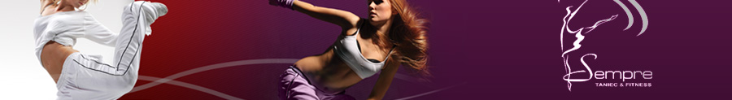
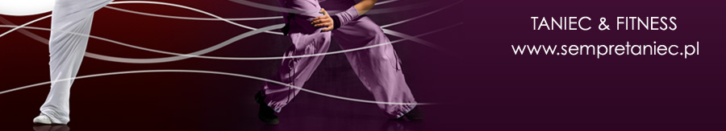
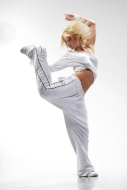

Prowadzimy nastepujące rodzaje:
- BPU (BRZUCH, POŚLADKI, UDA)
- intensywnie i skutecznie spalamy tkankę tłuszczową z dolnych partii ciała
- poprawiamy koordynację ruchów
Rozgrzewka - nieskomplikowany układ lub sekwencje kroków pozwalające rozgrzanie przede wszystkim dolnych partii. Część główna - brzuch! - pośladki! - uda! Średnie tempo muzyki i nieskomplikowane kroki oraz ruchy pozwalają na całkowite skupienie się podczas wykonywania ćwiczeń. Wykorzystujemy małe obciążenie, aby przyspieszyć spalanie tkanki tłuszczowej. Jak zawsze na koniec - chwila relaksu.
Zajęcia przeznaczone dla wszystkich osób na różnych stopniach zaawansowania.
- TBC (Total Body Condition)
- rozwijamy i rzeźbimy wszystkie partie mięśni naszego ciała
- przyspieszamy metabolizm, spalamy tkankę tłuszczową
- poprawiamy koordynację ruchów
Rozgrzewka w formie krótkiego układu choreograficznego trwa 10 - 15min. Część główna poświęcona jest ćwiczeniom różnego rodzaju - w ruchu, statycznym, na matach. Podczas ćwiczeń wykorzystujemy przyrządy, takie jak ciężarki, stepy, gumy. Tempo muzyki - średnie i średnio szybkie. Na koniec relaks i krótki stretching.
Zajęcia przeznaczone dla wszystkich osób na różnych stopniach zaawansowania.
- Body Shape - Kształtowanie sylwetki
- rzeźbimy sylwetkę - ćwiczenia na każdą partię mięśni
- zwiększamy wytrzymałość i siłę naszych mięśni
- poprawiamy koordynację ruchów
Rozgrzewka 10 - 15min intensywnych ćwiczeń przygotowujących do części głównej, która składa się z kilku serii na każdą partię mięśni. Ilość powtórzeń jest duża, a tempo średnie lub szybkie - dzięki temu intensywnie spalamy tłuszcz i rzeźbimy sylwetkę.
Zajęcia wszystkich osób na różnych stopniach zaawansowania
- Latino fitness
- wytrzymałość
- koordynacja ruchów
Latino fitness to nie tylko intensywny trening wytrzymałościowy - to przede wszystkim dużo radości z ruchu w rytmach latynoamerykańskich. Część główną stanowi układ choreograficzny z wykorzystaniem całej masy elementów tanecznych (samba, rumba, cha-cha, salsa... i inne).
Przeznaczony dla osób, które chcą spróbować nowego fitness'u, a na pewno dla wszystkich lubiących taniec.
- Step
- trening wytrzymałościowo-wzmacniający
- kształtujemy uda i pośladki
- znacznie poprawiamy koordynację ruchów
Trening wytrzymałościowy polegający na wchodzeniu i schodzeniu ze specjalnej platformy - stepu. Instruktor dobiera sekwencje kroków w zależności od stopnia zaawansowania grupy, tak aby zajęcia były zarazem intensywne ale przede wszystkim przyjemne.
Step to atrakcyjne zajęcia dla osób lubiących aerobik w formie układów choreograficznych - na poziomach podstawowym i zaawansowanym.
- Pilates
- rozwijanie świadomości ciała
- gwarantowany relaks i dobre samopoczucie
- wysmuklenie całej sylwetki, płaski brzuch
"Teraz już wiem - nie mogę się mylić. Cały kraj, cały świat powinien wykonywać moje ćwiczenia. Wtedy ludzie będą szczęśliwsi" - powiedział twórca coraz bardziej popularnej metody ćwiczenia i wzmacniania całego ciała, Joseph Pilates. I miał rację - na te zajęcia mogą uczęszczać wszyscy bez względu na wiek i płeć.
Ćwiczenia są wykonywane przy relaksującej muzyce, co daje pełną kontrolę nad każdym ruchem. Jest to jedna z najbezpieczniejszych form aktywności ruchowej.
Technika pilatesu opiera się na ćwiczeniach wzmacniających, elementach baletu, czy też jogi. Na pilatesie nauczymy się kontrolować swój oddech i zrelaksować ciało podczas ćwiczeń - co nie znaczy, że się wcale nie zmęczymy!
- Afro dance fitness
- wyzwalamy wewnętrzną siłę
- trening wytrzymałościowy, ogólnorozwojowy
Afro fitness to śmiałe połączenie aerobiku z elementami tańca afrykańskiego. Poznajemy swoje nowe dzikie, pierwotne "ja" przy muzyce tętniącej życiem. Zajęcia pełne żywiołu, zabawy ciałem i rytmem, pozwalają na zupełne oddanie się przyjemności z wykonywania ruchów naśladujących afrykańskich wojowników/wojowniczki ;)
Zajęcia dla osób znudzonych klasycznym aerobikiem, chcących spróbować czegoś innego.
- Tae-bo, Aero boxing
- rozwijamy wytrzymałość siłowąą
- poprawiamy koordynację ruchów
Trening o dość dużej intensywności, przy wykorzystaniu elementów kick-boxingu i innych sztuk walki - wykonujemy sporo podskoków, tempo jest szybkie. Ciosy, kopnięcia i bojowa postawa pozwalają na odstresowanie się, wyzbycie złości, agresji. Podstawą zajęć to połączenie siły z elastycznością naszego ciała co w wyniku daje nam efektywny i bezpieczny trening ogólnorozwojowy. Uczymy się także kontrolować oddech i silnie koncentrować na poszczególnych ćwiczeniach.
Na aero - boxingu skupiamy się stricte na technice wykonywania ciosów i kicków, co daje nam jeszcze większą świadomość ciała, z kolei na tae - bo wykorzystujemy wszystkie elementy i łączymy je w mini-układy, co czyni trening jeszcze bardziej atrakcyjnym.
Zajęcia przeznaczone są dla osób o dość dobrej sprawności fizycznej, lubiących "wycisk" na zajęciach.
- Joga
- wyciszenie, relaks, poprawienie koncentracji
- rozciągniecie i wzmocnienie całego ciała
Na tych zajęciach poznamy lepiej swoje ciało, podążymy w kierunku harmonii.
Joga to jedna z najspokojniejszych form aktywności ruchowej, która kształtuje nasze ciało powoli i skutecznie, pozwala nam się zupełnie wyciszyć. Tutaj bardzo ważny jest oddech - jeden z elementów wspólnych dla jogi i pilatesu.
Joga jest dla osób, które chcą dbać o swoje zdrowie i potrzebują wyciszenia przy spokojnej muzyce.
- Fat burning
- Stretching
- Gimnastyka 50+
© SempreTaniec.pl Wszelkie prawa zastrzeżone!